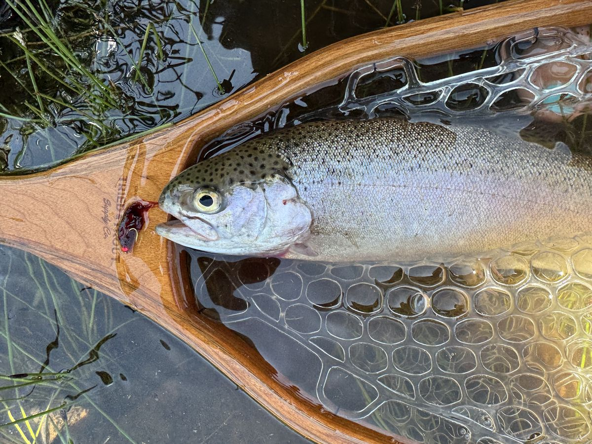
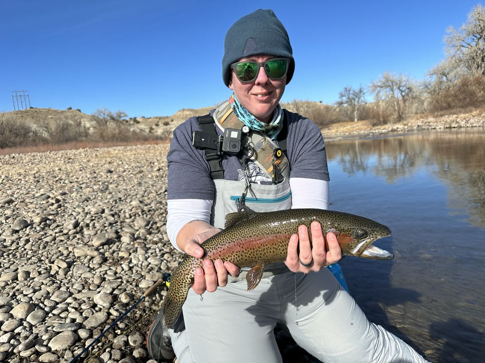

The story behind the name
If you don't fly fish, the name Confidence Fly Search probably sounds a little unexpected for an SEO brand. But if you've ever stood in a river, watched the water, and had to decide what to tie on — you already know exactly what it means.

In fly fishing, a confidence fly is the one pattern you trust above all others. It's the fly you reach for when the hatch is confusing, the fish aren't cooperating, and the conditions don't match anything in the guidebook. It's not necessarily the flashiest pattern in your box or the one that works in every situation. It's the one that works for you — because you've fished it enough times, in enough conditions, to trust it completely.
Every experienced angler has one. Maybe it's a Parachute Adams, an Elk Hair Caddis, or a Woolly Bugger. The specific pattern almost doesn't matter. What matters is this: when you tie on your confidence fly, something shifts. Your casts get more intentional. Your presentation improves. You read the water differently. You fish better — not because the fly is magic, but because the confidence behind it changes everything.
Mine are a Zebra Midge, a Bead Head Perdigon, and a Balanced Leech. Three very different patterns — a tiny midge for slow tailwaters, a tungsten nymph that cuts through fast current, and a stillwater fly that suspends right in the strike zone. They don't have much in common on paper. But they're the ones I've caught the most fish on, in the most conditions, on the rivers and lakes I fish the most. When I open my fly box and can't decide, those are the three I reach for without thinking. That's what confidence feels like.
Confidence doesn't come from having the perfect tool. It comes from trusting the ones you've built your experience around.
I've spent 15+ years in SEO, and the parallels run deep. In search, we're constantly facing changing conditions — algorithm updates, shifting SERP features, the rise of AI-generated answers, stakeholders who need convincing. It's easy to feel like you're standing in the middle of a river with no idea what's working.
What separates experienced SEO practitioners from the rest isn't having all the answers. It's having frameworks you trust. An audit process you've refined. A reporting structure that tells a clear story. A proposal format that gets buy-in. When you have those things dialed in, you stop second-guessing and start executing — with confidence.
That's what I wanted to build with Confidence Fly Search. Not another set of generic templates, but the same battle-tested frameworks I actually use in my own work — as Head of SEO at NASM and in my consulting practice. The ones I've refined through hundreds of real audits, real strategy presentations, and real conversations with leadership teams.
Get 10% off any product when you tell me yours.
No spam — unsubscribe any time.

I'm Niki Mosier, and I spend my days doing SEO — and my weekends fly fishing in the Colorado Rockies. The name Confidence Fly Search came from a moment of connection between those two worlds. I realized that the thing that makes me effective in both isn't talent or luck. It's preparation. It's having tools I trust. It's showing up with a plan I believe in.
I kept building the same frameworks from scratch for every new client and every new team — audit reports, recovery proposals, strategy decks to help leadership understand where search is heading. After years of refining them through real projects, I figured if I needed them, other SEO practitioners probably did too.
So that's what Confidence Fly Search is: the frameworks that give you confidence. The SEO equivalent of tying on your favorite fly and knowing — really knowing — that you're going to catch fish today.
Show up prepared. Trust your process. Fish with confidence.
The concept of a confidence fly is a cornerstone of fly fishing wisdom. If you want to go deeper on the idea from an angler's perspective, Brian Flechsig wrote a great piece on confidence flies over at Brian on the Fly. It's one of the articles that helped crystallize the name for this brand.
Battle-tested SEO frameworks built from 15+ years of real work. Ready when you are.